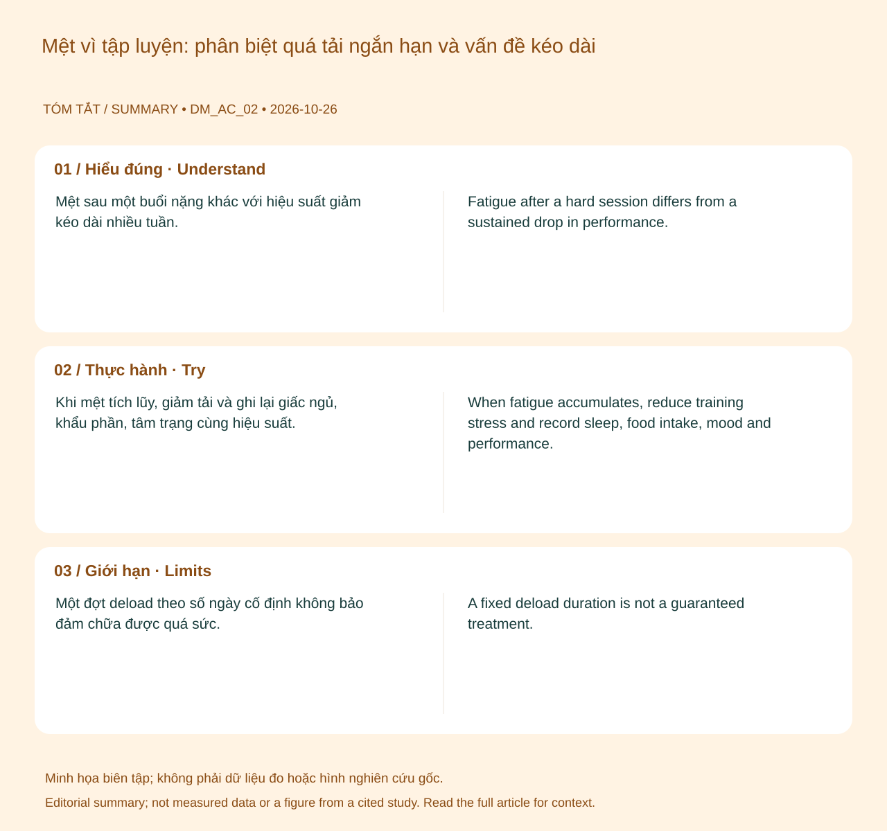

Khi mệt tích lũy, giảm tải và ghi lại giấc ngủ, khẩu phần, tâm trạng cùng hiệu suất. Chỉ tăng lại từng bước khi các dấu hiệu cải thiện. Dùng lịch tập linh hoạt thay vì cố vượt mục tiêu đồng hồ.
Hiểu đúng
Mệt sau một buổi nặng khác với hiệu suất giảm kéo dài nhiều tuần. Hội chứng tập quá sức cần đánh giá chuyên môn và loại trừ bệnh, thiếu năng lượng, thiếu máu cùng các nguyên nhân khác; chưa có một chỉ số HRV hay xét nghiệm đơn lẻ xác định được. 123

📊 Sơ đồ tóm tắt do biên tập tạo. Không phải số liệu đo, hình giải phẫu hay hình lấy từ nghiên cứu trích dẫn.(Mở sơ đồ tóm tắt biên tập ↗)
Bạn có thể làm gì?
Khi mệt tích lũy, giảm tải và ghi lại giấc ngủ, khẩu phần, tâm trạng cùng hiệu suất. Chỉ tăng lại từng bước khi các dấu hiệu cải thiện. Dùng lịch tập linh hoạt thay vì cố vượt mục tiêu đồng hồ.
Giới hạn cần biết
Một đợt deload theo số ngày cố định không bảo đảm chữa được quá sức. HRV có thể tăng hoặc giảm trong nhiều tình trạng; không dùng riêng nó để xác định nguyên nhân.
Khi nào cần tư vấn?
Khám nếu mệt và giảm hiệu suất kéo dài, sụt cân ngoài ý muốn, mất kinh hoặc chấn thương tái diễn.
Cập nhật nội dung và nguồn: 2026-10-26. Nội dung giáo dục; chưa có xác nhận duyệt bởi bác sĩ.
📚
Nguồn tham khảo và giới hạn bằng chứng
Nguồn chính: Meeusen et al. (2013) — Prevention, diagnosis, and treatment of the overtraining syndrome. Các nguồn bổ sung và phạm vi hỗ trợ được liệt kê trong bài. Cập nhật 26/10/2026; chưa có xác nhận duyệt bởi bác sĩ.
When fatigue accumulates, reduce training stress and record sleep, food intake, mood and performance. Resume progressively as these improve. Use a flexible plan rather than chasing device targets.
Understanding the topic
Fatigue after a hard session differs from a sustained drop in performance. Overtraining syndrome requires professional evaluation and exclusion of illness, low energy availability, anaemia and other causes. No single HRV reading or laboratory marker establishes it. 123
📊 Original editorial summary. Not measured data, an anatomical diagram or a figure reproduced from a cited study.(Editorial summary artwork ↗)
What you can do
When fatigue accumulates, reduce training stress and record sleep, food intake, mood and performance. Resume progressively as these improve. Use a flexible plan rather than chasing device targets.
What the evidence cannot tell you
A fixed deload duration is not a guaranteed treatment. HRV can move in either direction for different reasons and cannot identify the cause alone.
When to seek advice
Seek assessment for persistent underperformance, unintended weight loss, missed periods or repeated injuries.
Content and sources updated: 2026-10-26. Educational content; clinical sign-off has not been recorded.
📚
References and evidence limits
Primary reference: Meeusen et al. (2013) — Prevention, diagnosis, and treatment of the overtraining syndrome. Additional sources and their scope appear in the article. Updated 26 October 2026; clinical sign-off has not been recorded.